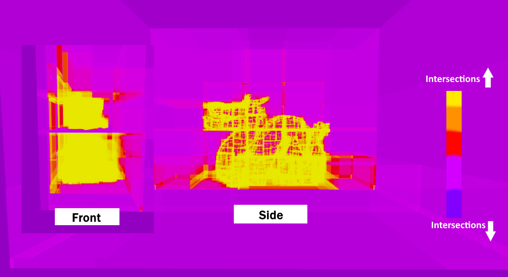
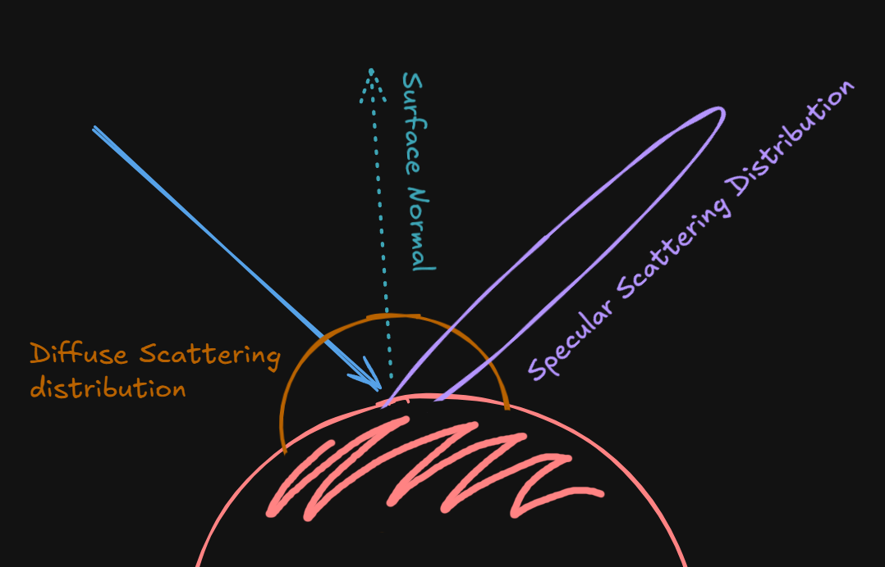
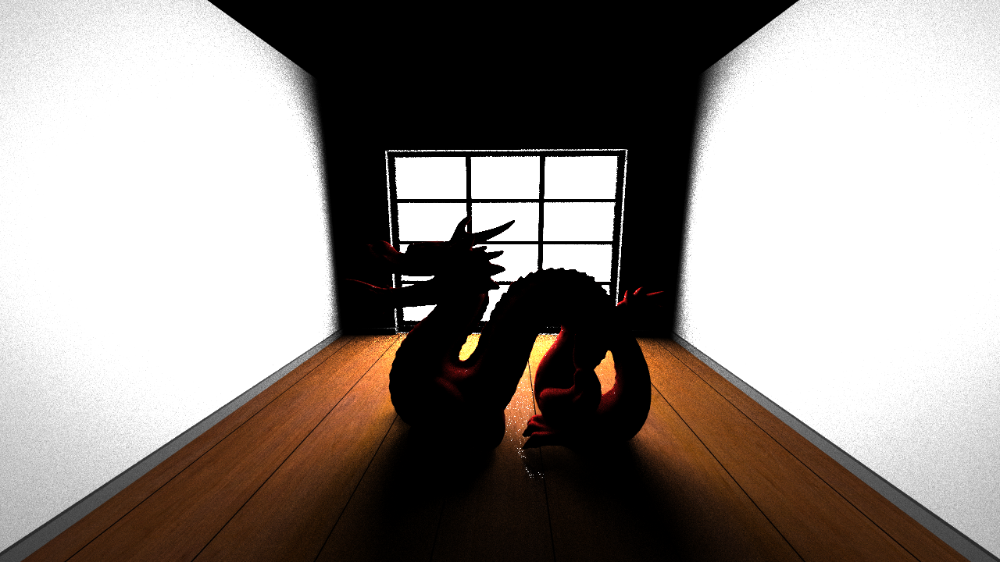
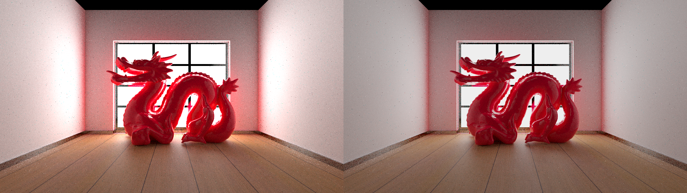

OpenGL CUDA Interop Setup
One of the key goals of the project is for it to be real-time (or close enough to real-time). To achieve this, we send an updated framebuffer from CUDA to OpenGL every iteration with the updated image pixel data. This buffer is then mapped to a texture on a 2D quad, on which the image is drawn. This means we aren't using any of the graphics pipeline features of OpenGL beyond simply rendering a textured 2D quad. Every frame we shoot a single ray from every pixel in the window, and we accumulate slightly jittered samples every iteration on the same frame provided the view hasn't changed since the last frame. This approach lets us get a crisp image over time while still being able to render in real time, achieving our real-time design goal. Further optimization work is needed to actually hit a stable, high enough framerate.
Camera Setup and Ray Generation
The camera is defined by a position (the eye), a look-at target (or forward direction), and an up vector. From these we build an orthonormal basis: forward, right, and up. so we always have a consistent local coordinate frame for the camera regardless of how it's oriented in the scene.
Given the vertical field of view and the aspect ratio of the render target, we compute the dimensions of a virtual image plane sitting one unit in front of the camera along the forward axis. For every pixel (x, y) in the window, we map its screen-space coordinate onto this image plane (using the plane's width/height and the pixel's normalized position within the resolution), and construct a ray whose origin is the camera's position and whose direction is the normalized vector from the camera through that point on the plane.
Because we're accumulating samples over multiple iterations (as described above), we jitter each pixel's sample position by a small random offset before generating its ray, every iteration. This means that instead of always sampling the exact center of a pixel, over time we sample many different sub-pixel positions, which is what gives us anti-aliasing basically for free as a side effect of the accumulation loop.
Loading OBJ/MTL Mesh and Texture Sampling
We use a simple header-only OBJ loader library to load all meshes in our scene. As a simplification, we assume the entire scene is just one large lump of triangles, each with an id into a list of materials, instead of building some sort of scene graph from the OBJ file description. This approach considerably simplifies constructing the BVH and sending it along with the mesh buffer to the GPU. However, the limitation here is that handling dynamic scenes becomes infeasible, as meshes are no longer separate entities.
We could solve that by retaining a scene graph (or even just a list of meshes) on the CPU side, and every time a mesh needs to be transformed in the scene, we'd update the corresponding CPU triangle buffer, rebuild the "global" BVH, and update its GPU-side buffer as well before resending it to the GPU. Needless to say, this isn't the best way to go about it, since BVH construction is an expensive recursive procedure, and rebuilding it from scratch frequently is suboptimal. The correct way to do this probably involves separate BVHs constructed for each scene object. These per-object BVHs can be transformed along with their objects at a small cost. Then a crude scene-wide acceleration structure (or some other top-level structure) is constructed every frame such that its leaf nodes are the individual scene objects' BVHs.
Ray-Triangle Intersection (Möller-Trumbore)
Given that we're mainly dealing with mesh representations, this algorithm can be considered the core of our program. As far as I know, Möller-Trumbore is the standard fast algorithm for computing the intersection between a ray and a triangle. What makes it nice is that it solves directly for the barycentric coordinates of the hit point without needing to explicitly computing the triangle's plane equation.
Given a ray with origin O and direction D, and a triangle with vertices V_0, V_1, V_2, we define two edge vectors E_1 = V_1 - V_0 and E_2 = V_2 - V_0. The algorithm sets up the intersection as a small linear system and solves it using Cramer's rule, which works out to a handful of cross and dot products:
If \text{det} is close to zero, the ray is (nearly) parallel to the triangle's plane, so there's no hit. Otherwise:
If u < 0 or u > 1, the hit point is outside the triangle, so we can bail out early. Otherwise:
If v < 0 or u + v > 1, again the hit point is outside the triangle. Otherwise, the ray does intersect the triangle, and:
gives us the distance along the ray to the intersection point. The values u and v are the barycentric coordinates of the hit, which we reuse later to interpolate the triangle's per-vertex normals and UVs across the surface.
Bounding Volume Hierarchy Construction and SAH Motivation
Without an acceleration structure, every ray has to test intersection against every triangle in the scene. This is of course wasteful and prevents us from ray tracing anything remotely complex. So a search structure is needed. I chose to implement a Bounding Volume Hierarchy (BVH). The BVH is constructed recursively: we build an axis-aligned bounding box (AABB) to encompass the entire scene's geometry, then recursively subdivide that box into left and right children, build boxes for them, and pass down the geometry each one contains. A few implementation questions come up here: how do we store geometry in the nodes efficiently, how do we decide where to subdivide, when do we stop subdividing (i.e. when do we arrive at a leaf node), and finally, how do we lay this whole structure out in a GPU-friendly way.
For the split itself, the simplest approach is to pick the longest axis of the current node's bounding box and split the geometry at the median (by centroid) along that axis, which is cheap and guarantees a roughly balanced tree. The problem is that a purely balanced tree isn't necessarily a fast tree to traverse: It ignores how much empty space each child box actually covers. This is where the Surface Area Heuristic (SAH) comes in: since the probability that a random ray hits a given box is roughly proportional to that box's surface area, SAH estimates the expected traversal cost of a candidate split as (surface area of left child \times triangles in left) + (surface area of right child \times triangles in right), and picks the split that minimizes this cost instead of just the split that balances triangle counts. It's more expensive to evaluate at build time (you're effectively testing many candidate split planes per node), but it tends to produce noticeably shallower, faster-to-traverse trees for non-uniform scenes.
Where the CPU node struct stores a 6-float AABB, an index to its left and right children (or -1 if it's a leaf), and a vector of indices into the triangle buffer denoting the triangles it contains, the GPU node buffer differs in that it identifies its constituent triangles by a start index and a count into a new, sorted triangle buffer. This is necessary because we can only allocate a fixed-size buffer on the GPU side, so having some leaf nodes be much larger than others isn't feasible. To do this, we need an extra pass at the end of construction that builds this new GPU BVH node buffer while simultaneously building the reordered triangle buffer that gets sent to the GPU.

GPU BVH Traversal
At this point we've constructed a BVH on the CPU side, allocated memory for it on the GPU, and sent it there as buffers via cudaMalloc & cudaMemcpy. We have an ordered triangle buffer and a GPU BVH node buffer. The only remaining issue is that we can't really traverse this structure recursively until we reach a leaf node, since recursion isn't favored on the GPU for a few reasons: threads execute in lockstep (SIMT), so a naive recursive traversal means every thread in a warp is stuck waiting on whichever thread recurses the deepest; GPU call stacks are limited and eat into the already-scarce per-thread register/local memory budget; and function-call overhead in general is more costly on GPU architectures than on CPU. Instead, we traverse iteratively by maintaining an explicit stack (a small fixed-size array per ray) that we push and pop node indices onto as we walk down the tree, which avoids all of the above.
The Light Transport Equation, BRDF, and Motivation for Importance Sampling
Now that we have an efficient way to determine when a ray intersects a triangle, the next step is to determine how a new ray should bounce off of that triangle. There are two central questions about this ray: (1) where does it go next (direction), and (2) what is its new color (payload)? Recall that, at its essence, our program simulates light transport by simply bouncing rays around based on the surface properties of the geometry they hit, and attenuating the color of these rays based on the color of the surfaces they bounce off of. In the final gather kernel, we color each pixel by the attenuated color of the ray launched from it.
To determine the color and direction we use the light transport equation (Kajiya). Simply put, the light leaving a given point towards a given direction is equal to the light it emits plus the sum of all incoming light directions (\omega_i) above the point's normal-hemisphere that fall on it and get scattered in the viewing direction (\omega_o), weighted by the angle of incidence of the incoming light. This integral can't be solved analytically, since determining the inner term L (the incoming light at the point) requires knowing the outgoing light at whatever point it came from, which requires solving its integral, and so on recursively.
The standard solution is Monte Carlo integration: instead of evaluating every incoming direction, we sample from just a few, drawn from some distribution. If we sample uniformly, we need a lot of samples to converge. But if we sample from a distribution that closely resembles the true distribution of scattered light, we need far fewer samples, in fact only a single sample per bounce would suffice! This is the whole idea behind importance sampling: the closer our sampling distribution is to the true integrand, the lower the variance of our estimate, and the faster the image converges. To implement this we need to answer two more questions: how do we determine the portion of incoming light (\omega_i) that gets scattered in a given viewing direction (\omega_o), and how do we get samples from a distribution that resembles the true one?
The answer to the first question is the Bidirectional Reflectance Distribution Function (BRDF). This function takes an incoming direction and an outgoing direction, and gives the ratio of reflected radiance along \omega_o to incoming irradiance along \omega_i. Technically, a portion of the light is also transmitted/refracted into the surface, and that should be accounted for by the more general BSDF. But I'm planning to implement that at a later stage, so for now our simpler model can't simulate those light properties. I'll discuss my BRDF implementation in the next section.
To get samples from a distribution that resembles the true scattering distribution, we simplify things by assuming all light scatters in one of two ways: specular or diffuse. For specular scattering, the sample should be close to the direction of a perfect mirror reflection (the direction making an equal but opposite angle to the normal as the viewing direction, per the law of reflection). For diffuse scattering, the sample can be any random direction over the point's hemisphere. The goal is that for a highly diffuse material, the probability of picking a diffuse-lobe sample should be much higher than picking a specular-lobe sample, and vice versa for a shiny material. So we randomly choose one of the two sampling methods based on a "specular probability," which we derive from the material's roughness value. (This probability can also be weighted by the Fresnel term, so that even a mostly-diffuse surface leans more specular at grazing angles.)

In my implementation we have two methods for these two problems. BRDFEval gives the throughput (attenuation) of the view ray based on the sample we chose, while BRDFSample gives us that ray sample based on the specular-vs-diffuse probability discussed above. In the next section I'll discuss BRDFEval.
The Cook-Torrance BRDF: Diffuse/Dielectric/Metallic Surfaces
We use the Cook-Torrance BRDF to model surface properties in a physically based way. This model is more physically accurate than Blinn-Phong, since it's normalized to ensure that the sum of light reflecting off a surface is never greater than the light incoming (the classic Blinn-Phong specular term isn't normalized this way, so at low roughness / high shininess values it can actually reflect more energy than it receives).
In the model, the color of the resulting ray is a mix of a diffuse component and a specular component, blended based on a computed Fresnel value. This Fresnel value is higher when the surface is viewed at a grazing angle, since specular surfaces tend to look more reflective from those angles.
The diffuse component is simply the Lambertian color divided by \pi.
The specular component is a function of the normal distribution function and the geometry function, as well as the angles between the normal, the light, and the view directions. The normal distribution function, GGX, is a function of the material's roughness and the angle between the normal and the half vector (the half vector is just the vector halfway between the view and light directions, \text{normalize}(V + L)). The geometry function, Schlick-GGX, models self-shadowing and masking of the microfacets; in practice it's evaluated twice, once using the view direction and once using the light direction, and the two results are multiplied together (this is Smith's method), rather than depending on the view direction alone. Finally, the Fresnel term is a function of the view direction, the half vector, and a base reflectivity F_0. This base reflectivity is 0.04 for non-metallic materials, and otherwise it's the material's diffuse color (reflections off metals are tinted by their diffuse color, whereas dielectrics don't tint the color of their reflections).
Direct Lighting (Next Event Estimation with Importance Sampling)
By now we have everything we need to get a final image. However, one problem persists: because the chances of a ray hitting a light source by chance are slim, it takes a huge number of iterations (well over 1000) before the image converges. The solution is to separately, directly sample a light before scattering rays. That is, when a ray intersects a triangle, we randomly choose a point on an emitting surface and sample a ray from the intersection point to that light point, provided there's no geometry obstructing its path. This "cheat code" makes the image converge much faster and produces a much crisper image, since there's now a far higher probability that a ray effectively "hits" a light source. However, because it requires an extra, expensive visibility check (to see if anything obstructs the path between the surface and the sampled light point), which means a whole new intersection test and therefore a new BVH traversal, our framerate drops by almost half. We could get around this by probabilistically choosing whether or not to perform direct light sampling per ray, in a similar vain to the Russian Roulette termination discussed later.
Also, after adding direct lighting, rays that scatter naturally and happen to still hit a light would end up double-counting that light's contribution, making it appear brighter than it should. The correct fix is multiple importance sampling (MIS), which weights a ray's contribution depending on whether it hit the light via direct sampling or via a natural scatter. I've decided to leave that for now, and instead just resolve the extra brightness by tonemapping the final image.

Russian Roulette Ray Termination
Russian Roulette termination probabilistically kills off rays before they reach the max bounce count, rather than always letting every ray run to the full depth. If we simply pick a random shorter max-depth and stop there, we would effectively just throw away energy and darken the image. Instead, at each bounce past some minimum depth, we compute a survival probability p for the ray from its current throughput, We then draw a random number: if the ray "survives," we keep tracing it, but boost its throughput by dividing by p to compensate for the rays that didn't survive; if it doesn't survive, we terminate it there. This keeps the estimator unbiased. On average, over many samples, the boosted-throughput survivors make up for the energy lost from the terminated rays, so the image still converges to the correct result. Depending on how high we set the max bounce value, this gives us roughly a 10% faster average frametime.
Tone Mapping
Without tonemapping, some pixels get very bright as the number of bounces increases, since luminance is otherwise unbounded. The simplest tonemapping strategy is Reinhard, which just maps a pixel's color c to c / (c + 1). It does the job, although it does cause the image to look a little washed out / low-contrast.

Stream Compaction
When a ray terminates prematurely (either because it hit a light source, bounced out of the scene, or was killed by Russian Roulette), we end up with threads doing no useful work, since the number of launched threads per kernel stays the same, causing wasted occupancy. The solution is using stream compaction: after each kernel launch, we reorder the rays so all the still-active ones are at the front of the list, using thrust::partition. The next kernel launch can then only run over this shorter, compacted list. That said, there's overhead to performing the compaction pass itself, which can end up outweighing the performance gain depending on the three factors mentioned above.
Sorting by Material
Two rays launched from nearby pixels (and therefore nearby threads) are very likely to hit the same geometry, and therefore the same material. Since global memory fetches are expensive (~200–400 cycles), the GPU fetches an entire cache line (128/256 bytes) hoping it'll be reused by other threads in the warp. If we sort rays by material id at intersection time, we get a much higher chance that a ray's material data has already been fetched from global memory by the first thread in the warp, so every other thread in that warp can pull it from cache at a dramatically lower cycle count (~30).
Another important effect of sorting is that threads working on the same material type follow the same execution path, so there's no divergence within a warp. Thread divergence hurts performance a lot: when threads in a warp take different branches (e.g. different material types), the GPU executes each branch path serially for the entire warp, masking off whichever threads didn't take that particular branch, so total execution time ends up being the sum of every diverging path taken by any thread in the warp, instead of just the cost of one path.
That said, as with many things in life, there's overhead to the sorting step itself. For scenes with only a few, fairly similar material types (we really only have 3 material types here, with similar execution patterns), we hardly see any performance gain on most of the scenes we tested. In fact, we see about a 15% performance loss. I'm curious whether a tangible improvement shows up once we add more material types and test on larger, less homogeneous scenes.